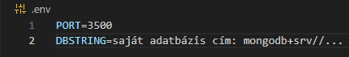
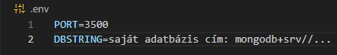
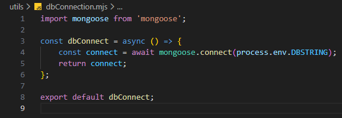

Szerver alapok - utils/dbConnection.mjs
Szerver alapok - utils/dbConnection.mjs

Ebben a részben létrehozzuk a utils mappában a dbConnection.mjs állományt, amelyben kialakítjuk a csatlakozást a Konyvtar adatbázishoz.
-
Hozzuk létre a
utilsmappában adbConnection.mjsállományt. és

-
Módosítsuk a
.envállományt. és 
-
DBSTRING=saját adatbázis cím: mongodb+srv//...- mindenkinek a saját csatlakozási sztringje aMongoDBfelületről.
-
-
Szerkesszük a
dbConnection.mjsállományt.-
import mongoose from 'mongoose';- amongoosenpmcsomag beimportálása. -
const dbConnect = async () => {...};- a csatlakozásért felelős függvény. -
const connect = await mongoose.connect(process.env.DBSTRING);- a csatlakozást biztosítópromise! -
return connect;- térjünk vissza vele, hogy máshol is fel tudjuk használni. -
try {...} catch (error) { console.error(error.message); }- ha valami hiba fordulna elő. -
export default dbConnect;- vigyük ki a modulból alapértelmezett exporttal.
-